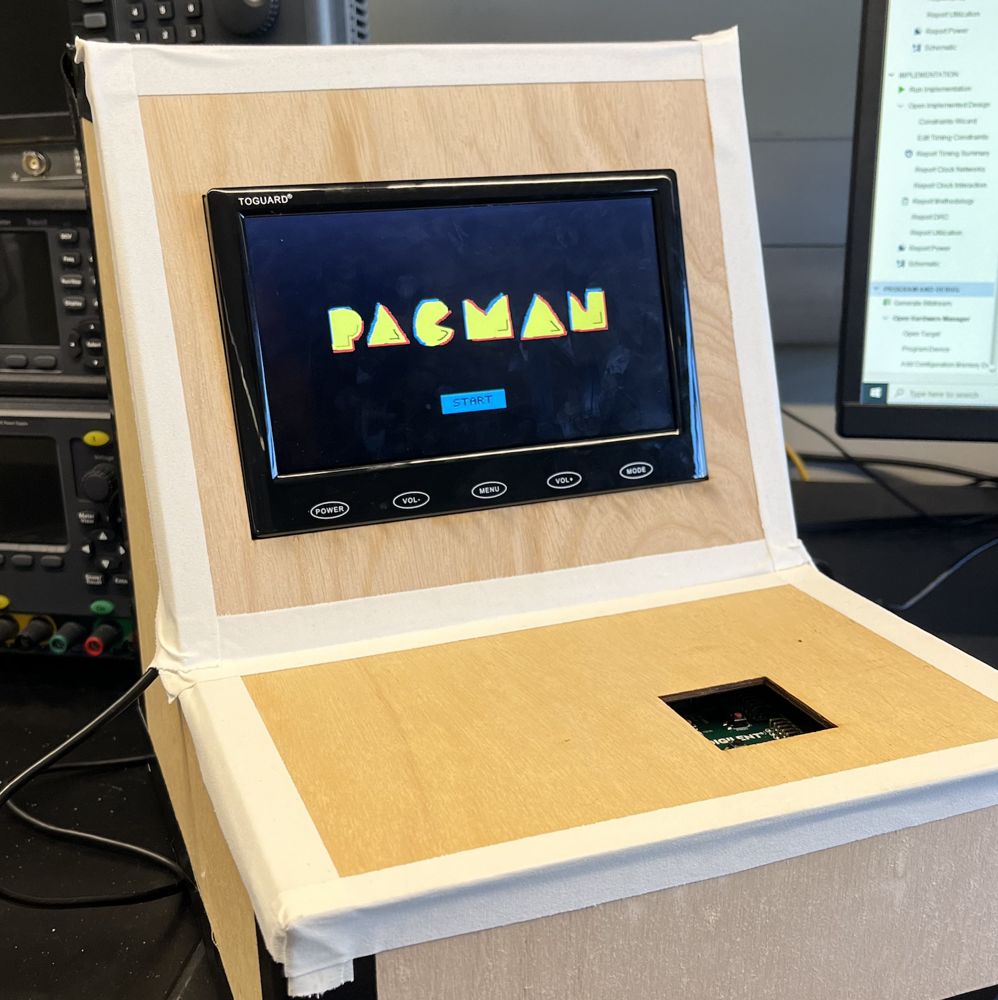

Recent Projects

My projects consists of a mix of software development, model design, and hardware interfacing.
[Upcoming: Hand Writing Detection Camera]

I am a senior at Duke University studying Computer Science and Electrical/Computer Engineering. I am interested in full-stack software development, data processing/handling and machine learning used within tech products or computation. On campus, I am involved in research, help out with UTA positions, Engineering Student Government as Treasurer, DTech, and the Society of Women Engineers. I am a 2023 & 2024 Duke Technology Scholar. In my free time, I love playing volleyball, listening to music, and traveling with my (newly upgraded!!!) DJI Mini 4 Drone (hoping to get the DJI Neo soon!).
My projects consists of a mix of software development, model design, and hardware interfacing.
[Upcoming: Hand Writing Detection Camera]
I have been an avid wanderlust and love to document my experiences traveling around the United States and abroad.
[Previous Semester: Copenhagen, Denmark!]
I grew up in the suburbs of Chicago into an mechancial engineering family, but I wanted to explore the coasts in college. I love discovering life through the sciences growing up, and I don't think that curiousity to try has left me yet :)
Through my research and internships, I've dabbled in data analystics, software development, and modeling. These past experiences have made me realize that I want to dive deeper into data processing and information extraction.
Outside of software engineering and technology, I love taking photos with my camera and eating food. But my hidden introverted self also enjoys watching Netflix and Marvel movies on my bed with my cat Thompson.